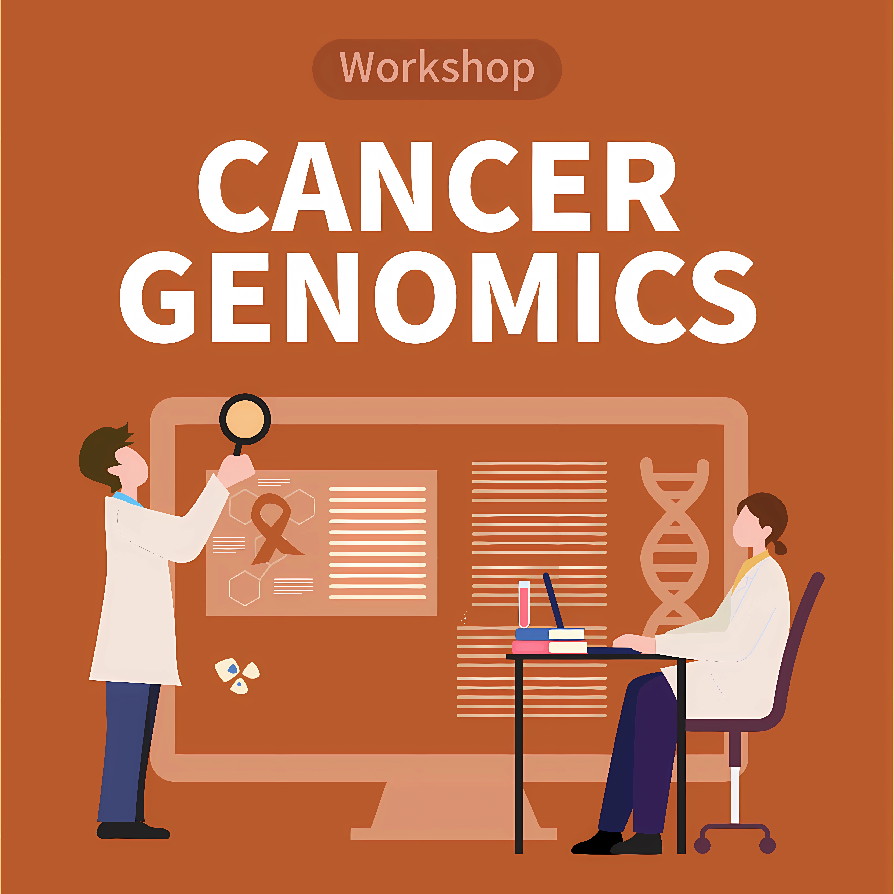
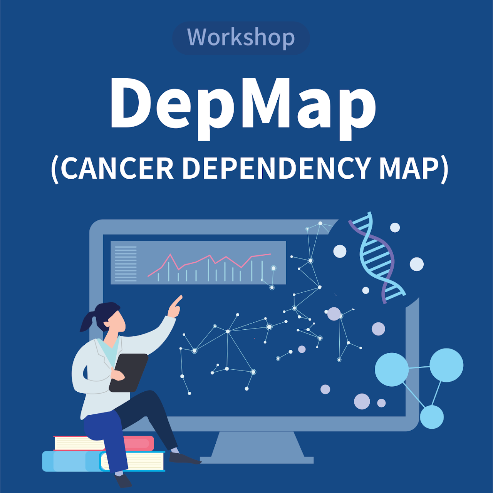
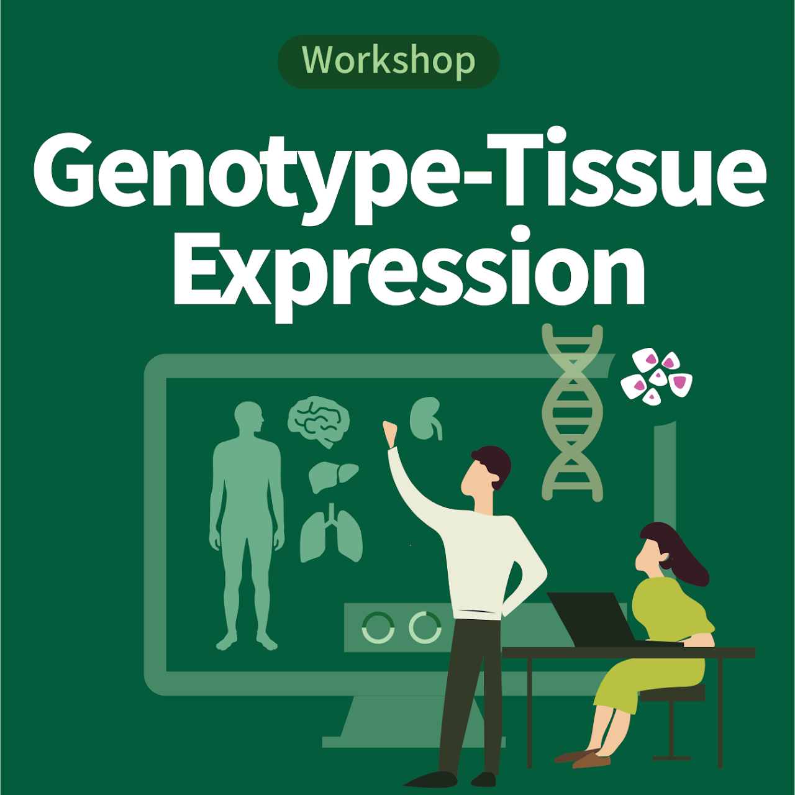

분석기술 개발 및 고도화
정밀의학 분석기술을 자체 개발하고 지속적으로 고도화하여 연구·진단 역량을 강화합니다.
가톨릭정밀의학연구센터는 기초연구와 임상을 연결하는 중개의학(Translational Medicine)을 활성화하고, 인공지능 및 최첨단 유전체 분석 기술을 통해 환자 맞춤형 정밀의학 연구를 선도하고 있습니다.
환자 개개인에게 최적화된 의료 서비스를 제공하는 것을 목표로 하며, 인공지능 기술을 활용하여 정밀의학의 새로운 패러다임을 선도하고 데이터 기반의 맞춤형 치료를 실현합니다.
인공지능으로 정밀의학의 새로운 패러다임을 선도하고, 데이터 기반의 맞춤형 치료를 실현합니다.
정밀의학 생태계를 구축하는 네 가지 핵심 사업을 수행합니다.
정밀의학 분석기술을 자체 개발하고 지속적으로 고도화하여 연구·진단 역량을 강화합니다.
의료진과 연구자를 위한 전문 교육 프로그램을 운영하여 정밀의학 전문 인력을 양성합니다.
대규모 유전체 데이터를 생산하고 AI 기반 분석을 지원하여 연구 성과 창출을 뒷받침합니다.
산업계·학계와의 협력을 통해 정밀의학 분야의 혁신 모델을 창출하고 실용화를 추진합니다.
연구부터 실용화까지, 다섯 갈래의 활동으로 정밀의학을 발전시킵니다.
국책과제를 수행하고 SCI급 국제 학술지에 논문을 발표하며 유전체 연구를 선도합니다.
머신러닝으로 유전체 데이터를 분석하고 질병 예측 모델을 개발합니다.
유전체 빅데이터 분석, NGS 등 실무 중심의 교육과 워크샵을 운영합니다.
국내외 학술대회를 공동 주최하고 심포지엄을 개최하여 협력 네트워크를 확장합니다.
감염 현장신속검사, AI 진단 알고리즘을 개발하고 특허를 출원하여 실용화를 추진합니다.
유전체 빅데이터 분석, NGS 등 실무 중심의 교육 프로그램과 워크샵을 운영합니다.

암 유전체 데이터의 구조와 분석 방법을 다루는 실무 중심 워크샵입니다.

암 의존성 지도(Cancer Dependency Map)를 활용한 표적 발굴 실습 워크샵입니다.

조직별 유전자 발현(GTEx) 데이터의 해석과 활용을 다루는 워크샵입니다.
환자 맞춤형 정밀의학을 위한 여섯 가지 유전체 분석 서비스를 제공합니다.
암 환자 맞춤 치료를 위한 유전자 변이 검사로 표적 치료의 근거를 제공합니다.
단백질을 암호화하는 엑손 영역을 집중 분석하여 희귀질환의 원인을 규명합니다.
개인의 전체 유전체 서열을 분석하여 폭넓은 변이 정보를 종합적으로 확인합니다.
유전자 발현 프로파일을 분석하여 질병 기전과 바이오마커를 탐색합니다.
혈액 내 순환 종양 DNA를 분석하여 비침습적으로 질병을 모니터링합니다.
단일세포 수준의 유전체·전사체 분석으로 세포 이질성을 정밀하게 해석합니다.
분석 서비스 관련 문의는 오시는 길 · 연락처를 통해 상담해 주시기 바랍니다.